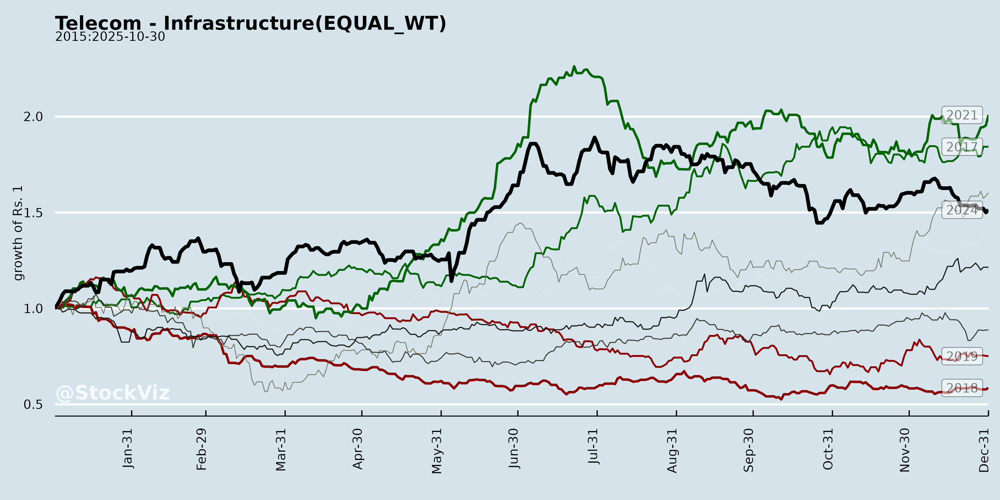
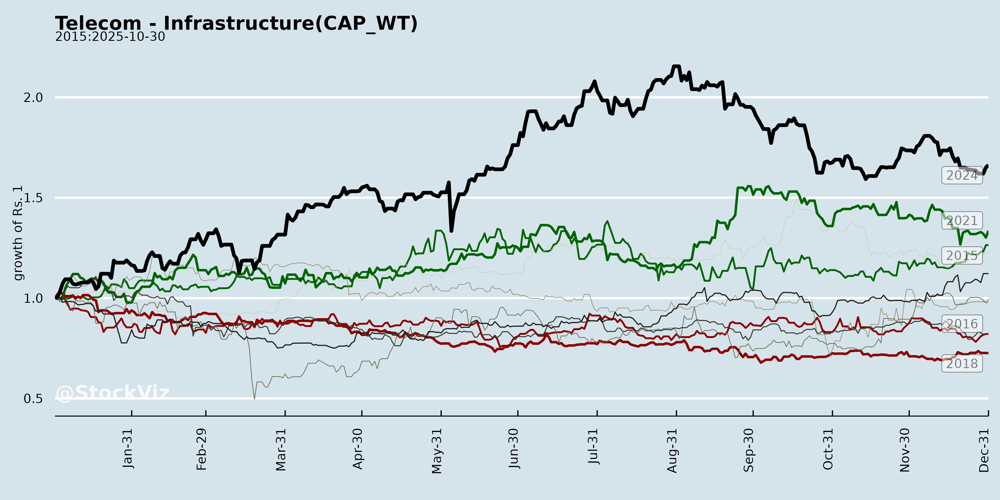
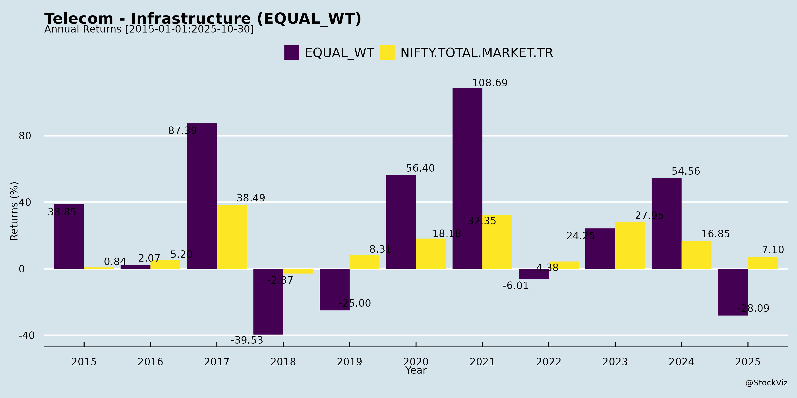
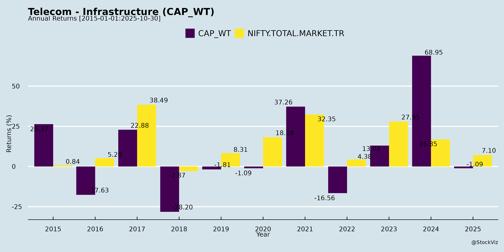
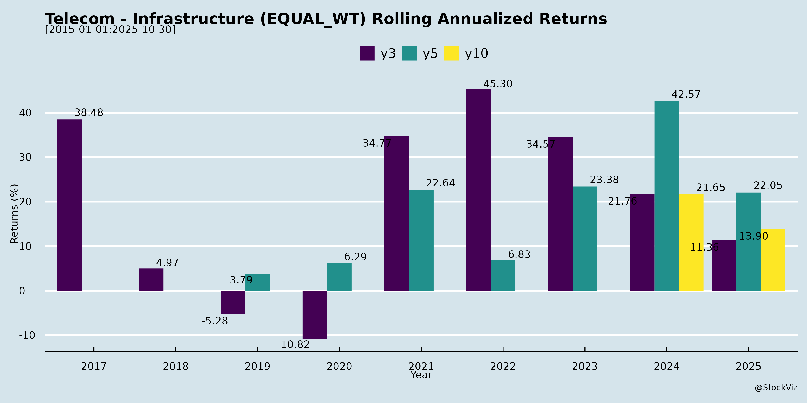
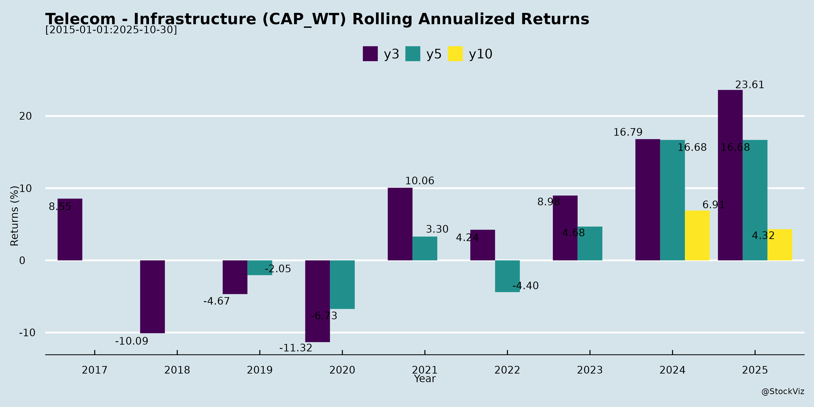

asof: 2025-11-29
Indian Telecom Infrastructure Sector Analysis
Context from Inputs: The provided documents from HFCL Limited (optical fiber/telecom equipment), Indus Towers Limited (tower infrastructure), and Suyog Telematics Limited (telecom engineering/procurement/construction) are routine SEBI Regulation 30 disclosures for upcoming investor/analyst meetings in Nov-Dec 2025. These indicate sustained institutional interest amid 5G rollout and digital infra push, with discussions limited to public info (no UPSI). No adverse events disclosed, signaling operational stability. Below is a synthesized analysis of headwinds, tailwinds, growth prospects, and key risks for the sector.
Tailwinds
Headwinds
Growth Prospects
Key Risks
| Risk Category | Description | Impact on Sector Players |
|---|---|---|
| Regulatory | ARPU freezes, tower load taxes, or FDI curbs on equipment. | Delays capex; hits Indus/HFCL revenues. |
| Financial | High debt (Indus ~₹25K Cr); rising interest rates. | Refinancing risks amid RoW delays. |
| Execution | Weather/monsoon disruptions to physical meets/installs (noted as subject to exigencies). | EPC delays for Suyog; tower rollout slips. |
| Macro | Slow GDP/telecom ARPU growth (<8%); Vi insolvency spillover. | Reduced tenancies; 10-15% revenue downside. |
| Geopolitical | Supply chain issues for optical components (HFCL exposure). | Cost inflation; import dependency. |
Overall Summary: Bullish medium-term outlook (CAGR 12-15% FY25-28) driven by 5G tailwinds and govt spend, but near-term headwinds from capex normalization pose volatility. Active investor meets signal confidence; monitor telco Q3FY26 earnings for tenancy/ARPU cues. Sector PE ~20x (vs. 18x historical avg.), with Indus/HFCL as top picks. Recommend tracking company websites (e.g., hfcl.com, industowers.com) for post-meet transcripts.
asof: 2025-11-30
The Indian telecom infrastructure sector (towers, EPC, cables, equipment) shows resilience amid recovery, driven by 5G rollout and favorable rulings, but remains challenged by legacy issues like customer defaults and debt overhangs. Analysis based on financials from key players: Indus Towers (market leader, towers), HFCL (equipment/EPC), Vindhya Telelinks (cables/EPC), GTL Infra (distressed towers), and Suyog Telematics (smaller infra). Healthy firms (Indus, HFCL, Vindhya, Suyog) report revenue/profit growth (e.g., Indus Q3 revenue +5% QoQ, profit +88% YoY post-provision reversals), while GTL highlights distress.
| Risk Category | Description | Impacted Cos. | Mitigation |
|---|---|---|---|
| Credit/Concentration | Vi dues (~₹5K Cr for Indus); potential further delays/exits. | Indus, GTL | Security packages, monitoring. |
| Debt/Insolvency | GTL: ₹7K Cr debt, NCLT risk; others high interest. | GTL (critical), Indus | Restructuring (RBI TEV); low D/E in leaders. |
| Regulatory/Tax | GST ITC reversals if appeals; property tax/site disputes. | All | Favorable SC/HC trends. |
| Operational | Site vandalism (GTL 379 sites lost); power costs up 1% YoY. | GTL, Indus | Insurance/FIRs; efficiency drives. |
| Macro | Telco capex slowdown if Vi falters; 5G ROI delays. | Sector-wide | Diversification (HFCL exports). |
| Going Concern | GTL explicit uncertainty; others stable. | GTL | Lender approvals pending. |
Overall Outlook: Optimistic for Leaders (Indus/HFCL/Vindhya) with 5G tailwinds offsetting Vi risks; High Risk for Distressed (GTL). Sector poised for 10-15% growth FY26 if Vi stabilizes/debt restructures. Investors: Favor low-debt, diversified players. (Data as of Jan-Feb 2025 filings.)
asof: 2025-11-29
Summary Analysis: Indian Telecom Infrastructure Sector
The Indian telecom infrastructure sector, dominated by players like Indus Towers (largest towerco with ~256k towers), GTL Infrastructure (debt resolution phase), HFCL (optical fiber/ESG focus), and emerging players like Pace Digitek (telecom gear + BESS), shows resilience amid 5G rollout and data surge. Analysis draws from Q2/H1 FY26 disclosures (ended Sep 30, 2025). Sector benefits from infra sharing (norm due to high capex), but faces execution/debt challenges. Key metrics: Indus revenue +9.7% YoY (₹81.9B Q2), EBITDA margin 56%; Pace order book ₹9.1k Cr, FY26 guidance ₹2.6-2.7k Cr (11-12% PAT).
Tailwinds
Headwinds
Growth Prospects
Key Risks
| Risk Category | Description | Mitigation |
|---|---|---|
| Customer Concentration | Indus: Airtel/Jio/Vi heavy (51% promoter Airtel). Vi weakness → exits. | Diversification (all TSPs), long MSAs. |
| Execution/Supply Chain | Pace: BESS cell imports (50-60% cost, China tie-ups); delays in 40 sites FY26. | Back-to-back pricing, backward integration (containers). |
| Regulatory/Policy | RoW delays, tariff hikes absent (ARPU push via plan changes), GST/IT C disputes (Indus win). | Govt tailwinds; VGF in BESS (₹27L/MWh). |
| Financial/Leverage | GTL debt overhang; Pace WC stretch (DSO high, net WC ₹970 Cr). Indus leases drag net debt. | Indus cash-positive; Pace IPO ₹820 Cr (₹630 Cr capex). |
| Competition/Pricing | Towercos (Amar/Bharti), BESS globals/infra firms. Low bids unsustainable. | Cost edge (Indus scale, Pace mfg). |
| Macro | Diesel/power costs (+7%), forex (cell imports), monsoon delays. | Solar/alt energy (Indus 61k low-diesel sites). |
Overall Sector Outlook: Positive (Buy/Hold). Tailwinds from 5G/data (CAGR 15-20%) outweigh headwinds; growth via BESS/energy efficiency. Indus stable cash cow; Pace high-growth but execution watch. Risks moderate (debt resolving, policy supportive). Target: Sector EV/EBITDA 5-7x (Indus at 5.2x). Monitor Vi recovery, BESS tenders.
asof: 2025-11-29
Indian Telecom Infrastructure Sector Analysis
Using the provided documents as input—disclosure filings from HFCL Limited (optical fiber, telecom equipment), Indus Towers Limited (tower infrastructure), and Suyog Telematics Limited (telecom O&M/infrastructure services)—which announce upcoming investor/analyst meetings in late 2025, the analysis focuses on sector dynamics. These filings signal sustained investor engagement amid 5G rollout and digital infrastructure push, with emphasis on “general business updates and industry” discussions (using only public info). No UPSI is shared, indicating regulatory compliance and stability. Below is a structured summary of tailwinds, headwinds, growth prospects, and key risks.
Tailwinds
Headwinds
Growth Prospects
Key Risks
Overall Summary: Bullish medium-term outlook (15%+ sector CAGR) driven by 5G/digital infra, with filings evidencing proactive engagement. Tailwinds from policy/telco spends outweigh headwinds, but execution risks warrant monitoring Q3FY26 updates post-meetings. Investors should track tenancy ratios, order wins, and Vi resolution for alpha. (Sources: Filings + public sector data as of Oct/Nov 2025).
asof: 2025-12-02
Summary Analysis: Indian Telecom Infrastructure Sector
The provided documents cover key players in India’s telecom infrastructure space (towers, EPC, fiber/IP leasing, equipment), including Indus Towers (towers), HFCL (optical fiber/EPC), Pace Digitek (telecom/energy infra), GTL Infra (towers), and Suyog Telematics (telecom infra/fiber). Analysis is based on Q1/Q2 FY26 financials, governance updates, and notes. The sector shows polarization: resilient players with growth (Pace, Suyog) vs. distressed ones (GTL), amid 5G tailwinds but legacy debt/customer churn headwinds.
Tailwinds (Positive Drivers)
Headwinds (Challenges)
Growth Prospects
Key Risks
| Risk Category | Details | Impacted Cos. |
|---|---|---|
| Financial | High leverage (GTL borrowings ₹2,931 Cr); interest coverage weak; going concern (GTL auditor emphasis). | GTL (high) |
| Operational | Tenant exits (Vi/Aircel); site dismantling/theft (GTL: ₹24 Mn loss H1); low occupancy. | All (GTL acute) |
| Regulatory/Legal | NCLT/DRT petitions; property tax disputes; GST/TDS reconciliations (Suyog/Pace notes). | GTL, Suyog |
| Execution | Provisional revenues (Suyog govt contracts); trade receivable confirmations (all); MSME classification risks. | Suyog, Pace |
| Market | Telco consolidation/mergers reducing demand; forex/competition in EPC. | HFCL, Pace |
| Governance | Promoter warrants (Suyog: partial conversion); FCCB conversions (GTL). | Suyog, GTL |
Overall Outlook: Optimistic for leaders (Indus/Pace/Suyog: growth via 5G/diversification) but fragile for laggards (GTL: survival risk). Sector tailwinds from 5G outweigh headwinds if debt restructures succeed; monitor Vi funding/Q3 tenancy. Investors: Favor low-debt, diversified plays.
asof: 2025-11-29
Indian Telecom Infrastructure Sector Analysis
Based on Q2/H1 FY26 announcements from HFCL, Indus Towers, Pace Digitek, Suyog Telematics, and Vindhya Telelinks (VTL).
Tailwinds (Positive Drivers)
Headwinds (Challenges)
Growth Prospects
Key Risks
Overall Summary: Indian telecom infra remains buoyant with tailwinds from 5G/defence diversification and infra spend outweighing headwinds like delays and margins. Growth prospects strong (10-20% revenue potential via exports/M&A), but risks center on liquidity/execution. Sector poised for recovery in H2 FY26 if collections accelerate.
Copyright © 2023 SAS Data Analytics Pvt. Ltd. All rights reserved.